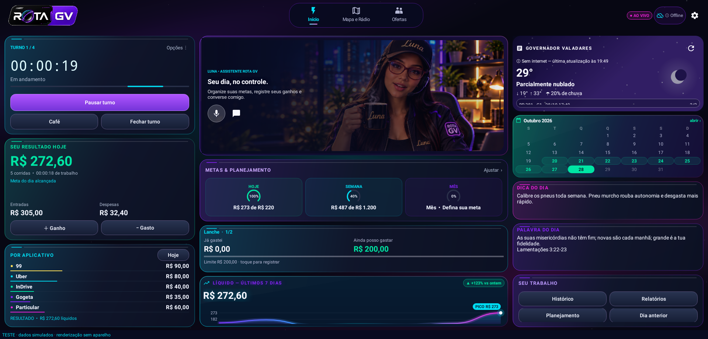

Seu trabalho.
No controle.
Turnos, ganhos, despesas e metas no mesmo painel. Conheça o ROTA GV para motoristas de aplicativo, na multimídia ou no tablet.
38,9 MiB · Versão de testes
Download público. Não é necessário entrar no GitHub.

Imagem ilustrativa da interface com dados simulados.
Inicie, pause e conclua turnos, acompanhando seus intervalos.
Registre ganhos e despesas e consulte seus limites de gastos.
Acesse a assistente pelo chat ou microfone, conforme os recursos disponíveis.
Consulte metas, calendário e resumo do trabalho em uma interface adaptável.
Baixe. Instale.
Organize sua rotina.
Este APK é a edição para multimídia e tablet Android ARM64, exclusiva para motorista de aplicativo. Confira a compatibilidade antes de instalar.
Baixe o APK
Use o botão desta página para baixar diretamente o arquivo público do ROTA GV.
Abra o arquivo baixado
Se o Android solicitar, autorize a instalação a partir da origem utilizada. Restrições da central continuam sendo respeitadas.
Preserve seus dados ao atualizar
Instale sobre uma versão anterior compatível. Evite desinstalar o aplicativo, pois isso pode apagar seus registros locais.
Configure as permissões
Autorize microfone e localização quando quiser usar os recursos correspondentes. Verifique o funcionamento antes de dirigir.
INTEGRIDADE DO APK / SHA-256
5fbabef2788831e5e6a7b30605ff9cefb28a9d8b6fc5b92f4ec54d4accb195e4Fale com o ROTA GV.
Informações sobre o aplicativo e instalação.
Falar no WhatsAppAntes de instalar.
O download é público?
Sim. Você pode compartilhar o endereço desta página e baixar o APK sem uma conta no GitHub.
Posso instalar no celular ou tablet?
Este APK atende multimídia e tablet Android ARM64. A edição específica para celular terá variações próprias e não é oferecida como edição separada nesta página.
Por que o Android não permite instalar?
Confira a versão do Android, a arquitetura do aparelho, o espaço livre e as permissões da origem do arquivo. A central também pode aplicar restrições próprias. Preserve a instalação anterior caso ocorra um erro.
Esta versão já é estável?
Não. Ela é uma versão de testes. Confira as funções necessárias no seu aparelho antes de depender delas durante o trabalho.